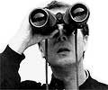
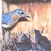

SEASONS
An airborne messenger of spring makes a comeback.
We've all heard about "the bluebird of happiness." And the song about April showers urges us to "keep on looking for the bluebird and listening for his song." But for a long time the unhappy story in much of America was of people having to look and listen longer and longer to see or hear these stirringly lovely birds.
Bluebirds were relatively common in the U.S. early in the century, but then their numbers fell drastically, perhaps by as much as 90% in 50 years. The problem was an actual elimination of some of their nesting sites (for instance, by replacement of many wooden fence posts with metal ones) and, much more important, a stealing of their nesting sites by new wildly successful immigrant species-starlings and house sparrows. Fortunately, people responded by building thousands and thousands of special bluebird houses (supposedly a hole of less than one-and-a-half inches in diameter in a bluebird box will keep starlings out, though not all the bluebird's competitors). The result of such concern has been a strong increase in bluebird populations in many places over the past few decades.
In spring, there is little chance of mistaking the male eastern bluebird. No other bird with vivid blue back has a rusty-colored breast and white belly. The female and immature male can be identified by several other typical bluebird features and touches of blue on the wings and elsewhere. The ranges of America's only other two species of bluebird, the western and mountain bluebirds, although they do overlap each other, do not extend into the eastern half of the U.S. and therefore do not overlap the territory of the eastern bluebird. The eastern bluebird is a year-round resident in the Southeast and, in lesser numbers, up the Eastern seaboard to southern New England and up the Ohio Valley to southern Ohio (rarely, the bird winters as far north as the southern shores of the Great Lakes).
The bluebird has been called the most un-thrush-like of thrushes. It certainly looks and acts much different than robins and the various brown thrushes. The note of the eastern bluebird is described as chur-wee or truly. The song is a series of soft gurgles that one bird expert says sometimes sounds like two birds singing together. Often singing in flight, bluebirds frequently perch in a conspicuous place (for example, atop an isolated tree), from which they swoop down to catch insects. They prefer to live in open woodlands, orchards, and farmyards.
The rings of Saturn are chillingly beautiful, sharp, and vivid in a telescope, even most very small telescopes, say astronomy writers. And it is quite true except during spells that occur about 14 to 16 years apart. During those spells, Saturn reaches a place in its orbit at which Earth beholds the mighty rings from a side view"-edgewise."
And, astonishingly, the visible ring-system, over 170,000 miles across, is less than a few hundred yards wide ...and therefore vanishes from view in even the world's largest telescopes when it goes edgewise! Saturn's rings go edgewise for the first time since 1980 on the morning of May 22, 1995. Just to observe the before and after-"Now you see them ...now you don't!"-is exciting in itself. But the full story of what will happen as Saturn's rings go edgewise to the Earth three times and edgewise to the Sun once between now and February 11, 1996, is much more exciting and complex.
In future columns I will explain more about what is happening and what to look for. Right now, I should point out that Saturn can be found in April in relation to the much brighter planet Venus. Venus beams low in the east about 45 minutes before sunrise, outshining all other points of light in the sky. In the second week of April start looking for a much dimmer point of light well below Venus-this is Saturn. Each night Saturn gets closer in the sky to Venus, until finally on April 13, it lies very close, just below Venus. In the days and weeks that follow, Saturn moves farther and farther to the upper right of Venus. Keep following it into May.
If you have access to a telescope, early May could be the time when Saturn is high enough at dawn for you to get a steady image of it and get a last look at the rings-appearing as a needle-thin line of light dissecting the planet's yellow globe. How long after May 22 will Saturn appear "ringless"? We will pursue the answer to that fascinating question in our next column.
Saturn will get dimmer than it has been for 15 years when the rings go edgewise, and the naked eye can appreciate that. But if you want the excitement of the nine-month ring show to be more than almost purely mental, you'll need a telescope to magnify the planet enough to see the rings (or the ringless globe of Saturn when the rings aren't detectable).
However, my initial advice to beginning amateur astronomers is: Don't get a telescope right away. Instead, I tell novices, go to your library and read up on astronomy. Do you like the subject as much as you initially thought (maybe more!)? Then, do some naked-eye observing, being sure to use books to learn how to identify at least the bright planets and brightest stars and constellations. Also, notice how you feel about being out in the dark and sometimes cold night. Do you feel that the sight of the moon, stars, and planets is worth a little chill or loss of sleep? Can you easily get to a safe observing site?
If you've passed the pretelescope test up to this point, there's still one step left before buying a telescope: binoculars. Binoculars are marvelously versatile and portable optical instruments that you may already have, perhaps for birding or sports events. If you don't have a pair of binoculars, you can buy a respectable pair for about thirty dollars, not the hundreds a good telescope will run you. Binoculars can show many thousands of extra stars, entire classes of heavenly objects too dim for the naked eye, and literally hundreds of features on the moon.
The greatest weak point of binoculars is that they do not magnify enough to see the globes and details of the planets. With the Saturn show occurring all year (and Jupiter displaying its mysterious new dark band caused by last summer's comet crash), this is a great year to get a telescope. But be sure to try at least some of the preliminaries I've suggested above before plunking your money down for a telescope. I hope to write more about what features to look for in telescopes in an upcoming issue-by which time you may be ready to buy one of these marvelous instruments.
April 1 is the day when practical jokes run rampant, when you'd better stop and consider whether that improbable assertion someone just made was made in earnest or in jest. The date is, of course, All Fools' Day. But why does it occur on this particular date?
The origins of April Fools' Day are obscure. Even back in 1760, Poor Robin's Almanack confessed: "The first of April, some do say, is set apart for All Fools' Day; But why the people call it so, Nor I, nor they themselves do know" But the explanation may lie in the date's connection with spring equinox festivities that also used to be New Year festivities in some cultures.
Up until the sixteenth century, when Pope Gregory enacted a reform of the old Julian calendar, European societies started their year around the time of the spring equinox (some non-Catholic countries resisted the change much longer-England until 1752, Russia until 1917). In France it had been the custom to send New Year cards and gifts to friends but when the New Year switched from April 1 back to January 1, some people continued to send them on April 1 as a joke. And this, perhaps, was the origin of All Fools' Day as we now have it.
Even the name of what is now the fourth month is not as simple as you might think. Perhaps it is the month of Aphrodite. Some experts, however, connect the Latin name of the month, Aprilis, to "aperture"-an opening.
Does this refer to April as the opening of the year, or as the time when flowers and the leaf buds of trees are opening? And a fool is not always as foolish as he seems. We can find examples of different kinds of wise fools all the way from the Fool in Shakespeare's King Lear to last year's movie hero, Forrest Gump.
|
 Arthur C. Smith/Grant Heilman Photography Hundreds of stars will be plainly visible with just a pair of binoculars. |
 The bluebird way well have been saved by the use of a box which restricts the access of larger species. |
|